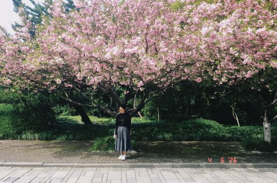
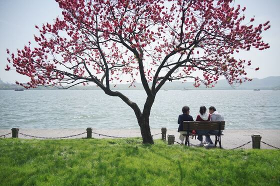

Gallery
Welcome to my gallery!
I am enamored with photography. It is not merely a way to preserve fleeting moments in memory, but also a medium through which I weave and voice my innermost thoughts.
May the lovely moments laid out below bring you a touch of delight.
The Campus 求是园
Photos taken @ Zhejiang University


Pillowed by West Lake 一枕湖山
Photos taken in Hangzhou, China


More 路上
Most recently: back to West Lake, Hangzhou ❤️





Back to 👉 🏠 Home